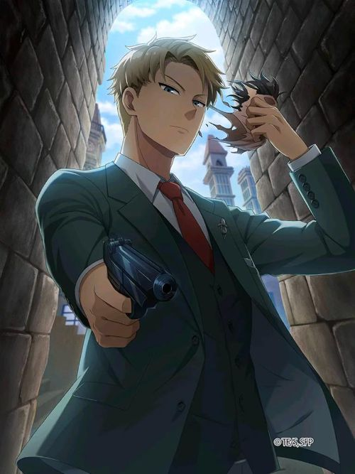

Loid Forger is a professional spy in the series. He was trained to be a spy since he was kid. He has a tough chlildhood where he facing war. He is sent to the mission where he is trying to get his daughter Anya to the prestigious school to get closer to the chairman's son. He is trying his best to stop the war by meeting the chariman.